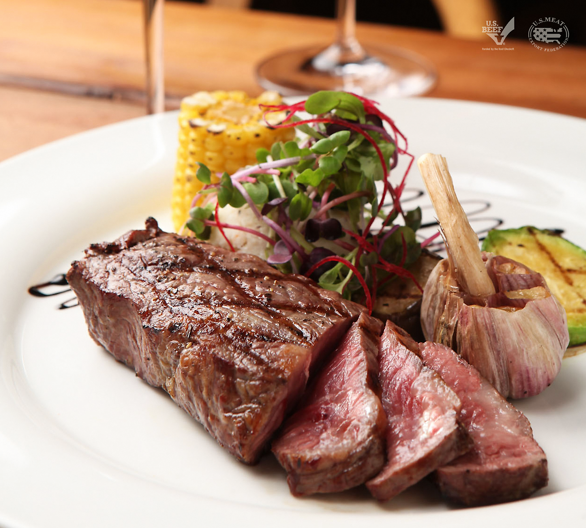

스테이크 레시피

stake recipe
참고 사이트
먼저 생등심에 소금과 후추를 번갈아 가며 뿌려 밑간을 하며 손가락으로 고기를 살짝 골고루 눌러준다.
그리고 달구어진 팬에 오일을 둘러 팬 전체에 골고루 발라지게 한 다음 등심을 올린다.
약 2분 정도가 지났을 때 즈음 고기 끝을 살짝 들어 갈색으로 변했는지를 확인 한 후 전체를 뒤집는다
고기가 없는 팬의 가장자리에 버터 1-2 큰 술을 넣고 녹인다.
팬을 내려놓은 후 스푼으로 버터 녹은 것을 스테이크 위에 골고루 끼얹어 준다.
made by 이현서